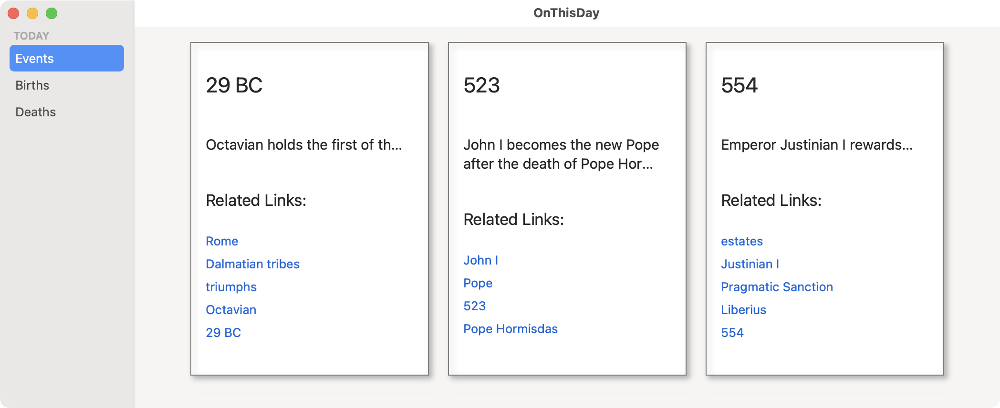

2.与Windows一起工作¶
在上一章中，你看了将为On This Day应用程序提供数据的API。你研究了如何解析传入的JSON，并设计了数据模型。
在本章中，你将在为你的应用程序创建主窗口时使用所有这些准备工作。
大量的macOS应用程序，如Finder，Mail，甚至Xcode，都有一个窗口设计，左边是导航侧栏，右边是更大的细节视图。你将在本章中建立的应用程序中使用这种风格。
一个新的Mac应用程序¶
因此，你终于得到了有趣的部分--创建你自己的macOS应用程序。启动Xcode并创建一个新的项目。
选择macOS App模板，点击Next，将应用程序命名为OnThisDay。选择SwiftUI作为界面，Swift作为语言。再次点击Next并保存你的新项目。
在做任何修改之前，构建并运行该应用，看看你已经有哪些功能。乍一看，似乎你的功能很少--只有一个相当小的窗口，显示默认的"Hello, world!"文字--但仔细看看：
你可以调整窗口的大小，最小化它，使其成为全屏（在这个阶段看起来相当奇怪）。你可以关闭窗口并打开一个新的窗口。事实上，你可以打开很多新窗口。当你有几个窗口打开时，看一下Window菜单。所有常用的窗口和标签工具都已经在那里了，你可以使用。
这个窗口的唯一控件是一个静态的Text视图，所以没有什么可以编辑的，但是Edit菜单就在那里，随时可以操作，就像人们希望在Mac应用程序中看到的所有其他标准菜单一样。
与iOS应用程序的比较¶
退出该应用程序并返回查看Xcode项目，其中有两个Swift文件：
有趣的是，这两个文件与你从基本的iOS应用模板创建iOS应用所得到的两个文件完全相同。
这也是为了强调一个重要的问题。Swift和SwiftUI在苹果的所有平台上都极其相似。差异在于SwiftUI如何根据所选平台显示不同的视图。作为一个macOS开发者，你的工作是了解macOS平台上用户的期望，以便你的应用程序最终看起来像一个macOS应用程序，而不是像一个iOS移植。
窗口是两个平台存在分歧的一个主要领域。iPhone应用程序是单窗口应用程序。iPad应用程序可以有多个窗口，但没有macOS应用程序可以有的巨大灵活性。在iPhone和iPad中，应用程序总是使用全屏，与Mac不同。
随着你在本节各章的学习，你会遇到更多Mac用户有不同期望的地方。然而，在本章中，你将专注于主窗口和它的设计。但首先，现在是时候把你在上一章中的所有努力工作加进去了。
添加数据模型¶
下载本章的材料并打开assets文件夹。选择并拖动Models和Utilities文件夹到Xcode的项目导航器中，勾选Copy items if needed并选择Create groups：
确保你已经选择了OnThisDay目标，然后点击Finish。
在扩展新组后，你的项目导航器看起来像这样：
Note
如果你没有看到文件扩展名，请在Xcode首选项中更改设置：
这些文件包含了你在上一章开发的数据模型，但为了清晰和可维护性，分成了不同的文件。我把getDataForDay(month:day:)包裹在一个Networker枚举中，以便于使用。AppState.swift包含更多的方法，你以后会用到。它们不是针对macOS的，所以本书不会详细介绍，但如果你想查看的话，它们都记录在评论里了。
设计窗口¶
你的应用程序的主窗口将有一个侧边栏和一个细节区。侧边栏将允许你选择要显示的三种类型的事件，详细区域将以网格形式显示这些事件。
在iOS应用程序中，你可以使用一个NavigationView来创建这样一个系统，每个事件类型都有一个NavigationLink，并指向一个详细视图。这在iOS设备上效果很好，详细视图取代或覆盖了导航视图，但在Mac上效果并不好。所以忘掉你对NavigationLink的所有了解；你不会在这里使用它。］
在一个有多个窗格的macOS应用程序中，你仍然从一个NavigationView开始，但是，由于窗口可以一直显示所有的窗格，你必须在所有窗格都已经到位的情况下初始化NavigationView。然后，你使用一个选择属性来确定在详细视图中显示什么。
为了说明这一点，打开ContentView.swift，把body的内容替换成这样：
// 1
NavigationView {
// 2
Text("Fake sidebar")
Text("Fake details")
}
// 3
.frame(
minWidth: 700,
idealWidth: 1000,
maxWidth: .infinity,
minHeight: 400,
idealHeight: 800,
maxHeight: .infinity)
这有什么作用？
- 将整个显示屏包裹在一个
NavigationView中。 - 为每个窗格添加占位符视图。
- 为窗口的大小设置限制。这个
frame修改器设置了一个下限和一个理想的尺寸，但允许窗口无限地扩展。
构建并运行该应用程序，你会发现你已经有了一个看起来像真正的有两个窗格的macOS应用程序：
Note
这也会出现在预览画布中，没有应用程序的标题，但你需要实际的应用程序窗口来完成下一个任务。
窗口的大小¶
你使用了一个frame修改器来设置窗口的大小。这不是iOS开发者需要担心的事情--iOS应用程序使用所有的可用空间--但它对Mac应用程序非常重要。该修改器为宽度和高度设置了三个值：最小、理想和最大尺寸。
最大的设置很简单；对于一个应用程序的主窗口，很少有理由不允许无限扩展。对于特定的子窗口，你可能更喜欢设置一个精确的尺寸或限制尺寸，但你几乎总是可以将maxWidth和maxHeight设置为.infinity。
理想的设置是你对SwiftUI布局系统的建议，即每个新窗口可以使用什么。在实践中，理想的尺寸不会被应用，但无论如何要把它们放进去，因为这可能会改变。打开的窗口将存储它们的尺寸，并在应用程序重新打开时重新应用它们。
最小值是最重要的：它们设定了窗口的最小允许尺寸。你需要确保这些数字足够大，以显示所有重要的东西，但不要超过必要的大小。你不知道人们正在使用什么尺寸的屏幕。
但你如何确定要使用的数字呢？一种方法是对窗口进行截图。把它设置成你想要的大小，按Shift-Command-4，把鼠标放在窗口上，按Space来突出显示它。按住Option关闭通常的屏幕截图阴影，然后点击窗口捕捉它。
要看屏幕截图的细节，在Preview中打开它并按Command-I，或者在Finder中选择它并按Command-I，然后打开More Info：
Image size显示宽度和高度，单位为像素。如果你使用的是Retina屏幕，用这些数字除以2，得到SwiftUI尺寸单位。
这样做两次，得到最小和最理想的尺寸，然后把你的数字插入frame修改器中。你可能想在以后重复这个过程，当你最终确定界面时。
随着应用程序的运行，你可以在设定的范围内调整窗口的大小，建立新的窗口，关闭它们，将它们合并成标签，并进行所有常见的Mac窗口操作。
也可以通过侧向拖动分隔线来调整窗格的大小。如果你把分隔线一直拖到右边，然后让它离开，细节窗格就会消失，但你可以把你的指针放在窗口的边缘并把它拖回来。然而，在SwiftUI中存在一个错误，这意味着如果你隐藏了侧边栏，就不可能再把它找回来!
如果你丢失了侧边栏，请关闭窗口并打开一个新窗口。在下一章中，你将学习菜单和工具栏，并找出恢复边栏的更好方法，但现在，只需制作一个新的窗口。
设置侧边栏¶
现在你已经有了窗口的骨架，你可以开始用真实的东西来替换那些占位符。
对于侧边栏，创建一个新的SwiftUI View文件，名为SidebarView.swift。
这个视图将循环浏览你作为Event.swift的一部分添加的EventType中的案例，显示每个案例的标题，并允许用户在它们之间切换。但是如果你想循环浏览一个enum的情况，它必须符合CaseIterable。
在Event.swift中，编辑EventType声明，使其看起来像这样：
enum EventType: String, CaseIterable {
没有必要做其他的事情，但是现在你可以使用EventType.allCases来循环浏览这些类型。
回到SidebarView.swift中，用这个替换SidebarView的内容：
// 1
@Binding var selection: EventType?
var body: some View {
// 2
List(selection: $selection) {
// 3
Section("TODAY") {
// 4
ForEach(EventType.allCases, id: \.self) { type in
Text(type.rawValue)
}
}
}
// 5
.listStyle(.sidebar)
}
这里发生了什么？
- 为了跟踪选定的事件类型，你需要一个属性。父级
ContentView将提供这个。 - 该属性被绑定到列表上作为其选择。
- 一个
Section增加了一个可折叠的标题。 ForEach在事件类型中循环，并显示其名称。- 将列表样式设置为
.sidebar，使其略微透亮。
现在预览代码显示了一个错误，因为它没有selection属性。由于这将是在一个侧边栏中，而侧边栏通常是很窄的，所以使预览变窄是有意义的，所以编辑SidebarView_Previews中的previews来包含这个：
SidebarView(selection: .constant(nil))
.frame(width: 200)
而不是现在就构建和运行，确保预览画布显示，并点击Resume或按Option-Command-P，使其显示你的变化：
预览macOS视图¶
你刚刚使用了预览画布来查看你的侧边栏视图在应用程序中的样子。当你在开发一个iPhone应用程序时，你会在预览中看到一个iPhone的轮廓，你可以打开Live Preview来使这个视图具有互动性。在开发macOS应用程序时也有同样的功能，但它们的工作方式有点不同。
与iOS应用程序一样，你可以点击预览上方工具栏中的Plus按钮来创建第二个预览。然后，你可以使用Modifiers按钮来设置你想让预览看起来如何。一个预览显示浅色方案，一个显示深色方案，这非常有用。
当你想有一个实时预览时，就会出现Mac的差异。当你的侧边栏显示在预览画布上时，点击Live Preview按钮。我不确定你期望看到的是什么，但我敢打赌，它不是这个！
点击Bring Forward，可以看到另一个令人惊讶的景象：
为什么会有两个窗口？当您在iOS应用程序中运行实时预览时，Xcode在后台运行模拟器，因此您可以在预览画布内与您的视图互动。在macOS应用程序中，Xcode实际上运行完整的应用程序，这是你在这里看到的较大的窗口。题为Xcode Preview的小窗口，总是出现在屏幕的左下角，是实际的实时预览。
定位您的Xcode窗口，这样您就可以在改变章节标题的同时观看Xcode预览窗口中的侧边栏。您的改变会立即出现。
由于构建和运行一个macOS应用比在模拟器中运行的iOS应用更快，所以使用预览来构建组件视图，但实际运行应用来测试交互。
Note
对于任何对为什么实时预览窗口总是出现在屏幕的左下方感兴趣的人来说，我推测这是因为在AppKit（相当于UIKit的macOS）中，屏幕坐标原点在左下方，而不像UIKit中的原点在左上方。值得庆幸的是，SwiftUI让你不必与两个不同的坐标系纠缠。
现在你已经设计好了你的侧边栏，是时候让ContentView来显示它了。在ContentView.swift中，添加一个属性来跟踪侧边栏的选择，并将其默认值设置为events：
@State private var eventType: EventType? = .events
接下来，用这个替换第一个占位符Text视图：
SidebarView(selection: $eventType)
现在构建并运行该应用程序。选择一个事件类型。它用你的系统重点颜色突出显示。打开System Preferences ▸ General，改变Accent color。侧边栏的高亮颜色也会改变。将窗口移到颜色强烈的背景上（比如这张明亮的橙色墙纸），可以看到侧边栏是略微半透明的：
Note
如果你的侧边栏不是半透明的，请核实你的System Preferences ▸ Accessibility ▸ Display，并取消勾选Reduce transparency。
创建一个事件卡¶
右边的窗格将在一个网格中显示事件，但在建立网格本身之前，你需要为网格中的每个事件设计一个视图。
添加一个新的SwiftUI视图文件并将其称为EventView.swift。
现在你有三个视图文件，最好把它们放到一个像Models组一样的组中。选择三个...View.swift文件，右击并选择New Group from Selection。把这个新组的名字设为Views。
每个EventView都需要一个Event来显示，所以打开EventView.swift，在结构顶部添加这个属性定义：
var event: Event
一段时间后，Xcode会发现这在EventView_Previews中导致了一个错误。预览的EventView(event:)需要一个Event值。
添加预览内容¶
为了避免触及API的使用限制，你将在预览中使用一个样本事件。看一下Xcode项目导航器，在底部有一个叫做Preview Content的组。这是你可以把样本代码和数据放在预览中使用，但不是在最终的应用程序中。
回到你下载的assets文件夹，寻找SampleEvent.swift。使用与之前相同的设置将其拖入Preview Content组。这个文件包含了一个单一事件的JSON，并被解码为一个Event。因为它只在预览中使用，而不是在实际的应用程序中使用，所以它使用强制解包来避免返回一个可选项。而现在你的预览将能够访问Event.sampleEvent，只要他们需要显示一个带有事件的预览。
为了修复EventView.swift中的预览，将previews的内容改为：
EventView(event: Event.sampleEvent)
构建事件卡¶
看一下Event.swift，提醒自己它的属性。你不需要显示id，因为它只用于循环。你可以在Text视图中显示text和year字符串，但是links需要一些特殊的处理。
从显示字符串开始。用这个替换EventView.swift中默认的Text视图：
VStack {
Text(event.year)
Text(event.text)
}
你在一个VStack中包裹了两个Text视图，以实现非常简单的显示。
现在，恢复预览画布，你会看到这个：

视图正在获取数据，但格式化需要工作。
Note
如果你不能全部看到，请选择Editor ▸ Layout ▸ Canvas on Bottom或使用预览画布下面的缩放控制来调整预览 .
格式化事件卡¶
现在要使EventView看起来像一张卡片。用这个样式的版本替换VStack：
// 1
HStack {
// 2
VStack(alignment: .leading, spacing: 30) {
// 3
Text(event.year)
.font(.title)
Text(event.text)
.font(.title3)
// links go here
// 4
Spacer()
}
// 5
Spacer()
}
// 6
.padding()
.frame(width: 250)
这看起来有很多代码，但下面是每一个位的作用：
- 把整个东西包在一个
HStack里，这样就可以把所有的东西往左边推。这对于在有不同数量文本的卡片上排好视图非常重要。 - 将内容包在
VStack中，将所有内容向左对齐（或向右，对于从右到左的语言），并在子视图之间留出比标准大的空间。 - 将两个
Text视图设置为使用较大的字体。 - 用一个
Spacer把它们推到VStack的顶部。 - 另一个
Spacer将VStack推到HStack的左边。 - 将
HStack设置为一个固定的宽度，周围都有填充物。
当你恢复预览时，你会看到这个，它已经看起来更好了：
添加链接¶
接着是EventLinks，每个链接都有一个标题和一个URL。SwiftUI有一个视图，非常适合于此。Link接收一个标题和一个URL，并创建一个可点击的链接，将在适当的默认应用程序中打开该URL。在这种情况下，由于这些链接都是网页链接，它们将在用户的默认浏览器中打开。
如果你是为iOS编写这个应用程序，你可能更愿意把用户留在你的应用程序中，并使用SFSafariViewController来显示链接的网页。这种视图在macOS应用程序中是不可用的，但即使是这样，Mac应用程序的用户也很习惯在不同的应用程序之间切换，而iOS应用程序的用户则倾向于留在当前应用程序中。在Mac上，如果你能同时看到多个应用程序的窗口，那就更容易了。
用这段代码替换// links go here：
// 1
VStack(alignment: .leading, spacing: 10) {
// 2
Text("Related Links:")
.font(.title2)
// 3
ForEach(event.links) { link in
Link(link.title, destination: link.url)
// modifier goes here
}
}
这又有什么作用呢？
- 将链接部分包裹在它自己的
VStack中，所以你可以设置不同的spacing。 - 为链接添加一个大字体的副标题。
- 循环浏览事件的链接，为每个链接添加一个
Link视图。因为你在上一章中使EventLink符合Identifiable，所以你不需要添加id参数。
再次恢复预览，看看这个：
现在启动Live Preview，点击Bring Forward，在Xcode预览窗口中，点击其中一个链接，在浏览器中打开它。
改变链接上的光标¶
现在的造型看起来不错，但你可以添加一个整洁的触摸。用户希望可点击的链接在他们将鼠标移至其上时改变鼠标指针。SwiftUI有一个onHover修改器，非常适合于此。
把这个修改器添加到Link视图中，取代// modifier goes here：
// 1
.onHover { inside in
if inside {
// 2
NSCursor.pointingHand.push()
} else {
// 3
NSCursor.pop()
}
}
那么，这是如何设置光标的呢？
- 每当鼠标指针进入或离开视图的框架时，
onHover动作就被调用。如果鼠标指针在框架内，传递给闭包的参数是true，如果在框架外，则是false。 - 如果鼠标指针在框架内，就把指向的手的光标
push到光标堆栈的顶部，使其成为活动光标 - 当鼠标指针离开视图时，将光标从堆栈中
pop出来，恢复到默认光标。
在实时预览中测试一下，当你移动鼠标时观察光标的变化。
使用实时数据¶
你几乎已经准备好开始显示网格了，但首先应用程序需要下载一些数据：AppState中的Day对象的字典。由于整个应用程序将使用AppState，你将在OnThisDayApp.swift中初始化它并作为EnvironmentObject访问它。
打开OnThisDayApp.swift，在结构顶部添加一个StateObject：
@StateObject var appState = AppState()
接下来，你需要把它传递给ContentView，所以给ContentView添加一个environmentObject修改器：
.environmentObject(appState)
这个数据线索的最后一块是告诉ContentView期待这个EnvironmentObject。跳转到ContentView.swift，在结构的顶部添加这个：
@EnvironmentObject var appState: AppState
现在ContentView和它的任何子视图都可以使用appState。
ContentView将检测到appState发布的任何变化days，但在那之后，它需要一种方法来查询appState的相关数据，以便在其显示中使用。
给ContentView添加这个计算属性：
var events: [Event] {
appState.dataFor(eventType: eventType)
}
这使用一个AppState方法来获取特定事件类型的数据。如果没有什么可显示的，它会返回一个空数组。
为了证明这一点，把Text("Fake Details")占位符替换成这样：
Text("\(events.count)")
在测试之前，你需要处理一些MacOS应用程序特有的问题。
沙盒化¶
当应用程序初始化appState时，它下载了当前一天的数据，ContentView会更新其显示内容以适应。但是，如果你现在尝试，它不会工作，因为你的应用程序是沙盒化的。iOS应用程序被沙盒化到他们自己的内存和存储区域，所以他们不能在没有你的允许下干扰其他应用程序或数据。macOS应用程序有一个类似的沙盒，但在默认情况下，它甚至不会让你从互联网上下载数据。iOS应用程序可以从任何安全地址下载，而无需改变任何东西，但由于某些原因，macOS在这方面的限制更多。
要允许下载，在项目导航器的顶部选择项目，然后点击侧边栏的OnThisDay目标。选择Signing & Capabilities标签。
在App Sandbox部分勾选Outgoing Connections (Client)。
这使应用程序能够请求和下载数据。你可能认为你需要打开Incoming Connections (Server)以允许下载，但客户端的设置就足够了，因为你的应用程序发起了下载请求。
现在构建并运行该应用程序。你会看到屏幕中间有一个零，几秒钟后，这个数字会变成一个更高的数字，这告诉你ContentView现在有数据可以显示。在侧边栏中选择不同的事件类型，可以看到不同的数字：
在网格中显示数据¶
现在，你已经准备好把这一切放在一起了。在Views组中添加一个新的SwiftUI View文件，将其称为GridView.swift。
在设置网格布局时，首要任务是为网格指定数据和列的排列，所以要将这些属性添加到GridView中：
// 1
var gridData: [Event]
// 2
var columns: [GridItem] {
[GridItem(.adaptive(minimum: 250, maximum: 250), spacing: 20)]
}
这些属性给了你什么？
- 父视图会将一个
Events数组传递给GridView。 - 网格使用
columns属性来计算其布局。这不是设置一个固定的行数或列数，而是告诉网格找出最好的安排，以适应可用的空间，将每一列的宽度设置为250，列的间距至少为20。
现在，你在预览中得到一个错误，因为它没有一个gridData参数。因为你要运行应用程序来测试这个视图，删除GridView_Previews以使Xcode满意。］
接下来，用这段代码替换body中默认的Text：
// 1
ScrollView {
// 2
LazyVGrid(columns: columns, spacing: 15) {
// 3
ForEach(gridData) {
EventView(event: $0)
// 4
.frame(height: 350, alignment: .topLeading)
// styling modifiers go here
}
}
}
这里的代码不多，适合大量的行动，但踏实的说，你：
- 将内容包裹在一个
ScrollView中。这允许滚动查看在窗口可见区域之外的条目。 - 在
LazyVGrid中显示数据。这是一个网格，它在窗口中按行绘制，但它是懒惰地绘制组件--按需绘制--而不是一开始就全部绘制。你配置LazyVGrid使用前面定义的columns，并给它一个spacing值来分隔各行。 - 在网格内，循环浏览事件，并使用你之前创建的
EventView来显示每个事件。和链接一样，这很容易，因为事件都有一个id属性。 - 设置每个
EventView的框架，使它们都有相同的高度，并与左上角对齐。
在ContentView.swift中，用Text("\(events.count)")替换：
GridView(gridData: events)
建立并再次运行该应用程序。它启动时有一个空白的细节区域，但一旦数据到达，你会看到类似这样的东西：
它需要更多的造型，但事件是存在的。你可以选择不同的事件类型并打开相关链接。注意到你在EventView中添加的间隔物使不同的事件在其顶部和左侧排成一排，不管文本的数量或链接的数量如何。伟大的工作!
样式化的事件卡¶
为了将网格元素样式化为更像卡片的视图，你要添加一个带有阴影的边框。
回到GridView.swift，将// styling modifiers go here替换为：
// 1
.border(.secondary, width: 1)
// 2
.padding(.bottom, 5)
// 3
.shadow(color: .primary.opacity(0.3), radius: 3, x: 3, y: 3)
这些修饰语有什么作用？
- 你使用辅助颜色添加一个边框，它将根据你的
Mac是在深色模式还是浅色模式以及对一些辅助功能设置的反应而改变。 - 由于你要添加一个阴影，你需要在底部加一些填充物，以阻止网格在最后一行将其切断。
- 你使用降低了不透明度的主色来应用阴影。这也会随着配色方案和可访问性设置而改变。
再次建立并运行该应用程序。当它有一些数据时，你会看到一个像这样的显示：
边框看起来很好，但是卡片中的每个元素都有阴影，而不仅仅是边框。另外，你现在可以看到，网格在窗格中开始的位置太高了，而且，如果你滚动到最后，它也太靠近底部了。
修复样式¶
在GridView.swift中，通过给ScrollView添加这个修改器来修复定位问题：
.padding(.vertical)
Note
双击ScrollView行末尾的大括号来选择整个视图。这告诉你该视图在哪里结束，所以你知道要把新的修改器放在后面的行上。或者使用代码折叠功能区，如果你启用了它。
对于阴影问题，在你刚刚添加的border修改器之前插入这些修改器：
.background()
.clipped()
在没有任何参数的情况下，background()为视图填充当前颜色方案的默认背景颜色。
clipped()阻止视图内容溢出视图的框架，这对有大量文本或链接的事件很好，但它也阻止了阴影应用到内部视图。
Note
目前还不清楚为什么会这样。阴影被应用于所有内部视图显然是一个bug，clipped()可以绕过这个bug，至少目前是这样。即使在苹果修复了阴影错误之后，你仍然需要使用clipped()来保持视图内容在框架内。
现在再次构建和运行。选择不同的事件类型，调整窗口大小，上下滚动网格并测试一些链接。你现在真的有了一个有用的应用程序。

Note
你可能想知道为什么不把这些修改器直接应用于EventView。稍后，你将重新使用EventView用于其他目的，而你在GridView中添加的修改器将不会在那里使用。
在多个窗口中工作¶
当你从项目模板中创建应用程序后运行它时，你调查了打开多个窗口的情况，也许你试着将它们合并成标签。
如果应用程序还没有运行，再次运行它，并打开第二个窗口。注意它是如何立即显示数据的，因为它正在共享appState中的数据，其中已经包含今天的事件。
现在改变其中一个窗口以显示不同类型的事件。看到了吗，这只改变了活动窗口？虽然这些窗口共享appState EnvironmentObject，但每个窗口都有自己的ContentView和自己的eventType选择。
看一下Window菜单。它列出了所有打开的窗口，但它们都有相同的标题，所以不可能确定哪一个是哪一个。为了解决这个问题，你要根据它所显示的数据类型给每个窗口一个标题。
设置窗口标题¶
在ContentView.swift中，添加这个计算属性，从选定的事件类型中导出窗口的标题，如果有的话：
var windowTitle: String {
if let eventType = eventType {
return "On This Day - \(eventType.rawValue)"
}
return "On This Day"
}
这将检查是否有选择，并将其原始字符串值附加到应用程序名称上以创建一个窗口标题。如果没有选择，它使用应用程序的名称作为默认值。列表选择属性总是可选的，所以即使你把eventType设置为默认值，你仍然必须做这个检查。
要使用新的属性作为窗口的标题，请将这个修改器添加到NavigationView下面你设置其frame的地方：
.navigationTitle(windowTitle)
建立并再次运行该应用程序。如果你有多个窗口打开，它们将再次全部打开，但重置为显示事件，因为那是默认类型。改变事件类型，注意窗口的标题如何变化以匹配。打开Window菜单，看看它是如何列出新标题的。为了确认在没有选择的情况下出现默认的标题，请在你的一个窗口中的选定的事件类型上Command-click以清除选择。
使用Environment Overrides或将Mac的颜色方案从浅色改为深色，或反过来，确认你的应用程序也会调整，而且一切看起来都很好。
挑战¶
看看EventView.swift，在那里你为每个事件设计了卡片，想一想你如何能增加一些风格。
- 一些文字用不同的颜色会不会好看？确保你在浅色和深色模式下测试你的颜色 - 你可以添加第二个预览来显示第二个模式。
- 在卡片上添加一些SF符号图标来装饰各种文字元素。如果你还没有，请下载并安装苹果的SF符号应用程序。
如果你需要一些想法，可以看看challenge文件夹中的项目，但这里没有错误的答案--你可以按照你喜欢的方式制作。
关键点¶
- 在已经规划好所有的数据模型之后，
SwiftUI应用程序可以很快地组合起来。 - 这种多窗格显示风格在
macOS应用程序中很常见，但你不会像在iOS应用程序中那样把它放在一起。 - 为你的窗口设置大小限制是很重要的。
SwiftUI实时预览在MacOS应用中的工作方式有所不同。Mac沙盒默认会阻止所有互联网连接。- 网格是一种显示大量数据的好方法。
接下来去哪？¶
在本章开始时，你有一些数据模型，这些模型在iOS应用和macOS应用中都可以很好地运行。你最终得到了一个看起来像真正的本地macOS应用程序的应用程序。干得好!
一路走来，你已经学到了关于Mac应用和窗口的重要知识，以及如何在Mac应用中使用SwiftUI。
在下一章中，你将接触到菜单和工具栏，使你的应用程序成为一个更像Mac的体验。